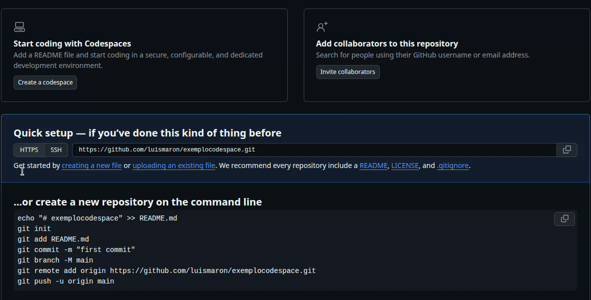
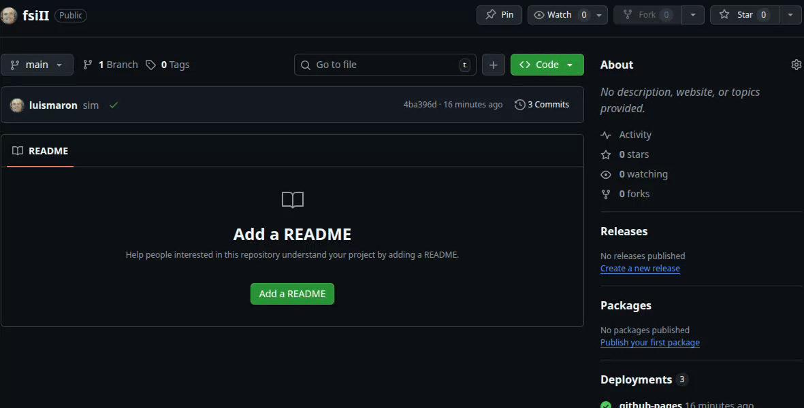
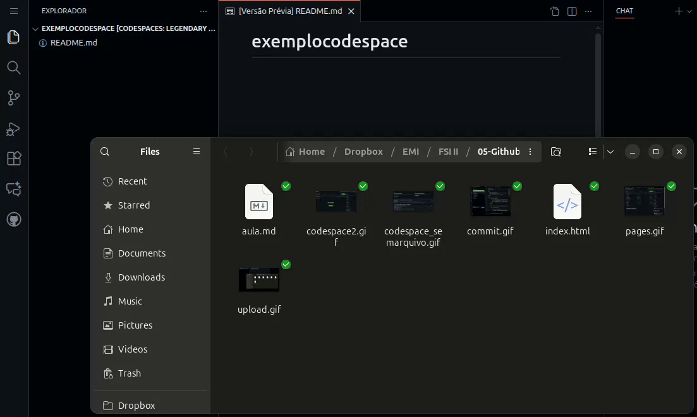
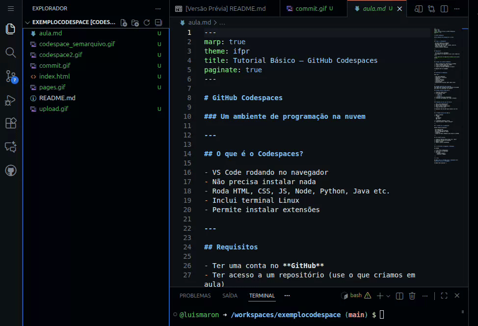

O que é o Codespaces?
O GitHub Codespaces é um ambiente de desenvolvimento completo, baseado no Visual Studio Code, executado totalmente na nuvem. Ele permite que você programe sem instalar nada na sua máquina.
- Funciona direto no navegador
- Inclui terminal Linux
- Roda HTML, CSS, JS, Node, Python, Java etc.
- Permite instalar extensões
- Integração total com GitHub
Requisitos
- Conta no GitHub
- Um repositório (próprio ou público), use o que criamos em aula
- Nenhuma instalação necessária
Criando seu primeiro Codespace
Caso ainda não tenha feito upload de nenhum arquivo, crie da seguinte maneira
Caso já tenha feito upload de algum arquivo, será da seguinte maneira:
- Clique no botão verde <> Code
- Abra a aba Codespaces
- Clique em Create codespace on main
O ambiente abrirá automaticamente no navegador.
Interface do Codespaces
Você terá acesso a:
- Explorer – Arquivos e pastas
- Search – Busca dentro do projeto
- Source Control – Git integrado
- Run and Debug – Execução e depuração
- Terminal Linux
- Extensions – Extensões web e padrão
- Ports – Visualização de portas para aplicações web
Fazendo upload de seus arquivos
Arraste seus arquivos e subpastas para o explorador de arquivos do codespace, como na animação a seguir
Criando Arquivos HTML/CSS/JS
Crie seus arquivos normalmente no VS Code:
index.htmlstyle.cssscript.js
Não se esqueça de criar o arquivo index.html, ele será a
página principal do seu site. Se for muito trabalhoso alterar todos os
seus links, crie apenas uma cópia da página inicial e dê o nome de
index.html
O autosave pode ser ativado no canto inferior direito.
▶ Rodando um site com Live Server
1. Instalar extensão
- Acesse Extensions
- Busque por Live Server
- Clique em instalar
2. Executar o servidor
- Abra o arquivo
index.html - Clique em Go Live
- Uma URL será aberta com seu site funcionando
Usando Git
Você pode usar o painel ou o terminal. Ou a inteface, conforme imagem abaixo.
Comandos úteis:
git status
git add .
git commit -m "Atualização"
git pushAlterando os arquivos e sincronizando o GitHub
Após alterar seus arquivos, é necessário atualizar o código no Github, conforme a imagem abaixo: Obs: são dois passos, primeiro o commit (Confirmação) e depois o push (Sincronizar). Primeiro
Ativação do GitHub Pages
- Abra o repositório no GitHub.
- Clique em Settings (ícone de engrenagem) na barra superior do repositório.
- No menu lateral, clique em Pages.
- Em Build and deployment (ou Source) escolha:
- Branch: selecione main (ou gh-pages) — a branch que contém o site.
- Folder: escolha / (root) para publicar a raiz do repositório.
- Clique em Save (ou Save/Save and deploy).
-
Aguarde alguns segundos — o GitHub irá processar e mostrará a URL
publicada:
https://<seu-usuario>.github.io/<nome-do-repositorio>
📝 Atividade prática
- Acesse o seu repositório, faça o upload de seus arquivos de projeto e ative o GitHub Pages